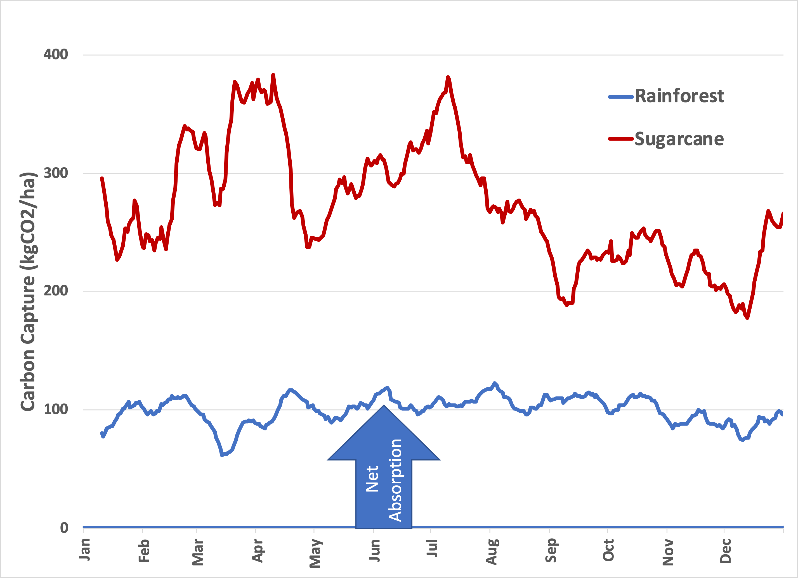
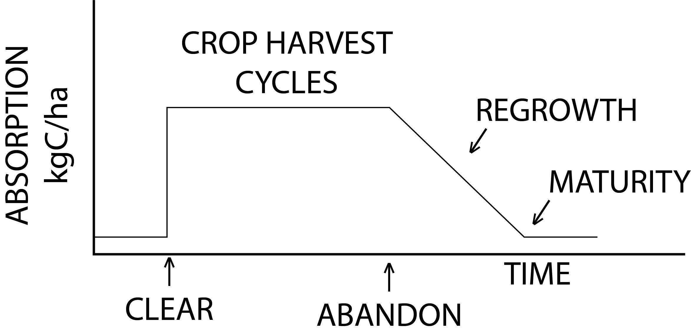

TL;DR: Biofuel life cycle assessments rely on flawed assumptions and inaccurate data. Current methodologies for iLUC assign fixed values to different crops without considering specific land conversion instances, basing them on politics rather than science. Specifically, these methodologies fail to balance the carbon books.
I apologize for being over a week late with this one. While composing this installment, I went down a couple of rabbit holes and wanted to give it time to mature. I’m continuing to consider induced (or indirect) land use change (iLUC), a measurement that has become part of accepted accounting practice for biofuel emissions.
iLUC recap and insights
In the last installment 1 , I established that, over the past 30 years, we are measurably cultivating more and more land. Looking at trend lines, some of this new land is being used to grow crops for biofuel, either directly or as replacement acreage. But there are problems: Biofuels aren’t the only use for new agricultural land, and what the land was used for previously, a necessary factor in quantifying “change,” isn’t easily tracked. It’s possible that it was virgin land, marginal land (not economically suitable for agriculture), or recycled from other agricultural uses (like grazing), each with a different emissions baseline. Still, the trend is there and roughly correlates with increased biofuel use. However, confoundingly, it also correlates with population growth. I concluded that even though land use change happens for many interrelated reasons, factoring iLUC into biofuel emissions is not inconsistent with the available data.
The sticky part is quantifying the change in the face of these factors. In practice, iLUC emissions are attributed to any biofuel source by assigning a fixed, crop-specific amount. As a quantitative scientist, I find this practice distasteful for several reasons. First, it conflates two kinds of numbers: absolute and relative. One number is the life cycle emissions attributed to the fuel production process—this is absolute: It is measured as carbon dioxide (and equivalents) emitted during fuel production. The other is a one-time change attributed to modifications in land used for fuel production—this is relative to a negotiable baseline.
To illustrate why this approach is problematic, consider the following: Imagine that land use change for biofuel production worldwide was banned. The land used for biofuels would be capped so that next year’s biofuels would use the same area as this year’s. What should the iLUC value be for next year’s production cycle? Zero, right? No change in land use must mean no iLUC! That also means that iLUC for biofuel should only be counted once in the year it was converted—after that, it’s no longer a change! I’ll leave it up to the mathematical geniuses who compute iLUC values to develop an algorithm. However, whatever they come up with must depend on how much land was converted during the production cycle, and today, it doesn’t.
The deliberate choice of a static value for setting policy suggests the following environmentalist’s point of view: “But for biofuels, we could grow more food, save more trees, and have more natural land at our disposal.” This attitude overlays an unfortunate moral judgment on the emissions from land use change. Imagine if we extended an iLUC ban to all land use changes, including food production. People would go hungry because Earth’s population is growing, and our food supply needs to grow commensurately. The critical distinction isn’t between agriculture and conservation; it’s a practical one between clearing land to produce (a) food alone or (b) food and alternatives to geologic carbon. The moral judgment isn’t whether to conserve natural land, it’s whether it’s OK to use land resources for fuel in addition to food 2 . That’s not an illegitimate concern, but it’s not a scientific concern and shouldn’t be politicized through pseudoscientific iLUC policy.
The second question is, “Why should iLUC differ from one crop to another?” I don’t think it should! The obvious answer, “Different crops produce different amounts of energy per acre.” ignores the definition of iLUC: The specific crop planted relates to direct land use and this factors into emissions from fuel production in the first place. If biofuels cause more land to be cleared, then this should be tacked on the emissions from the land itself. There needs to be a solid accounting of the general effect of land use change on emissions, which I’ll cover below, but, spoiler alert, measurements suggest that conversion of land to agriculture may lead to more, not less, absorption of CO2 from the atmosphere.
The present formulation suggests a judgment akin to economic sanctions, where variable iLUC factors guide farmers toward environmentally “better” crops and away from those disfavored crops judged “bad” for the environment. Heaven forbid we enable seges non grata (crops rather than persons non grata ) to enter our fields!
These points highlight that iLUC is ultimately a political (or policy) tool with only a tenuous basis in actual science. It relies on models that are too noisy to be accurate and have so many variables that a broad range of outcomes can be finagled. Those variables, in turn, can be selected to suggest the model’s scientific legitimacy despite its arbitrariness. The bottom line is this: It’s a valid concept with a bullshit implementation.
The second question I proposed in the first part of this series was:
While the amount of carbon in a given land area naturally decreases with harvest, is an undisturbed ecosystem really at a steady state?
Let’s start with a steady state assumption as a given, as in this figure I presented before:

Does this primitive model jive with data? Here’s the observed data I presented before for a virgin rainforest and a sugarcane field at approximately the same latitude:

That’s measured data. If any model doesn’t agree with measured data, then the model must adapt. The question is, do the existing iLUC models predict this outcome?
No. They do not. First of all, the two plots describe different things: The net flow of carbon from the atmosphere into the ecosystem below is measured, while the model accounts for how much carbon is present in the above-ground vegetation. The two measurements are related in the same way your paycheck affects your checking account—the books have to balance. So, looking at the forest data, models must account for what happens to the 100 kg CO2 per hectare per day of carbon dioxide that is absorbed, and they don’t. This carbon must end up somewhere because the rainforest couldn’t grow that fast 3 . We know it’s not released into the atmosphere or converted into vegetation. The only reasonable place left is underground, as stable soil organic carbon or as inorganic carbonates that leach with water flow.
Here’s what the model should look like:
Which profile is best for carbon removal? It depends, of course, on several factors, particularly how much of the harvest is turned back into CO2. The models assume that release is instantaneous, which is absurd. We have data about what would happen if the lumber were piled up and left to decay: It takes between 20 and 30 years to restore a clear-cut rainforest 4 . But, it takes even longer (up to 150 years) for wood to decompose (and it never does entirely because some carbon is retained in the soil) 5 , so clearcutting the rainforest may be (surprise!) carbon negative. In any event, active clearing beats waiting for forest fires to make the point moot.
Let’s imagine what the profile of absorption would look like based on the revised model profile:

It’s a fair point that iLUC models have become more sophisticated about agriculture and forestry in the past 40 years. But the fundamental problem remains. Upon a brief literature review, I discovered that the nature of these models continues to be a thorny area of extreme controversy, including this scientifically absurd quote:
Climate neutrality is often assumed, where the carbon that is sequestered by the feedstock is released back into the environment in a closed loop with no net climate forcing effect 6 .
This is what happens when physicists and ecologists get together without experimental results to calibrate their work. Modeling is undoubtedly made easier when you assume biology (which is mathematically messy) has no effect! But consider this inconvenient truth: If this assumption were valid, the freakin’ rainforests would be “climate neutral”, rendering both deforestation and afforestation moot! In fact, Keeling’s data from the 1950s 7 shows that biology is the most essential mechanism for removing carbon from the atmosphere. It must not be assumed away.
The fundamental problem is that some influential environmental scientists, rather than designing experiments to test their models, have focused on adapting their models to reinforce their beliefs. Indeed, “The Missing Sink Controversy” of forty years ago 8 has been resolved, but not how these so-called scientists would like. Yet, they continue to push their agenda in the face of data to the contrary. It’s shameful malpractice, and the perversion of science has dire, real-world consequences.
[See earlier posts in this series]
Before 1750, all agriculture was for food production, either for humans or livestock. For example, livestock, in the form of horses and oxen, allowed humans to spend more energy than their muscles provided. Consequently, since civilization's dawn, we’ve always used biofuels in one form or another. And none of that is accounted for
I did a back-of-the-envelope calculation to figure if it was reasonable that rainforests were growing fast enough to account for the carbon flux and determined that the Amazon rainforest alone, given its age and area, would have sucked all of the carbon out of the atmosphere a thousand times over!
The number is squishy, but see Lourens Poorter et al. , Multidimensional tropical forest recovery. Science 374 ,1370-1376(2021).DOI: 10.1126/science.abh3629
Russell, Matthew B.; Woodall, Christopher W.; Fraver, Shawn; D’Amato, Anthony W.; Domke, Grant M.; Skog, Kenneth E. 2014. Residence times and decay rates of downed woody debris biomass/carbon in eastern US forests. Ecosystems. 17(5): 765-777. doi.org
Bishop, G., Styles, D. and Lens, PNL “Environmental performance comparison of bioplastics and petrochemical plastics: A review of life cycle assessment (LCA) methodological decisions” Resources, Conservation and Recycling, 168 (2021), doi.org .
[See earlier posts in this series]
[See earlier posts in this series]